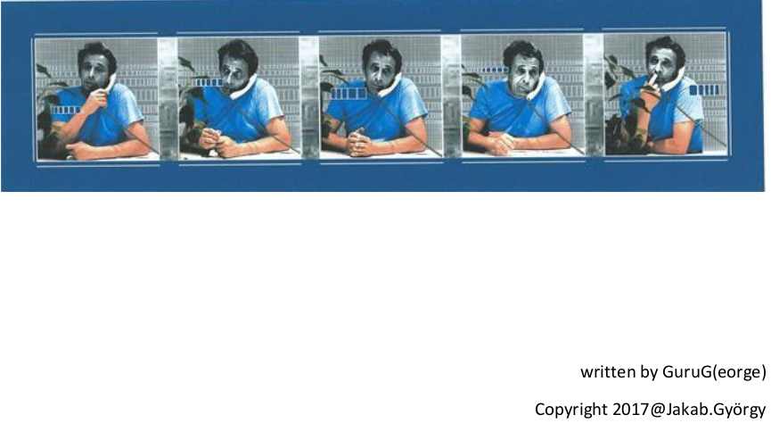

Bevezető
Szemelvények kedvenc írásaimból.
Kezdjük is rögtön Jakab Gyuri barátom egyik vidám (? most már az. :)
) történetével.(Kitalálható, miért pont ezt idéztem be)
És a teljes 'dolgozat' (kicsit hosszabb és a képek miatt nagy,, ezért külső linken van. Bocs: Spórolni kell a tárhellyel.:) )(Klikk a képre)
